Polynomiale Regression oder multiple Regression???
Contents
Polynomiale Regression oder multiple Regression???#
Lernziele#
Lernziele
TODO
Polynomiale Regression#
Wenn wir uns das folgende Beispiel betrachten, werden wir feststellen, dass die lineare Regression die Messdaten nicht besonders gut annähert.
import numpy as np
from numpy.random import default_rng
def erzeuge_kuenstliche_messdaten(koeffizienten, anzahl_daten=50):
zufallszahlen_generator = default_rng(seed=42)
xmin = - 5.0
xmax = + 5.0
x = zufallszahlen_generator.uniform(xmin, xmax, anzahl_daten)
error = 3.0 * zufallszahlen_generator.standard_normal(anzahl_daten)
y = error
for i in range(len(koeffizienten)):
y += koeffizienten[i] * x**i
return x.reshape(-1,1), y.reshape(-1,1)
# erzeuge künstliche Daten
X,y = erzeuge_kuenstliche_messdaten([-3, 7, 2, -2], 30)
# Split in Trainings- und Testdaten
from sklearn.model_selection import train_test_split
X_train, X_test, y_train, y_test = train_test_split(X,y)
# Auswahl des Modells
from sklearn.linear_model import LinearRegression
model = LinearRegression()
# Training
model.fit(X_train, y_train)
print('k0 = {}'.format(model.intercept_))
print('k1 = {}'.format(model.coef_))
# Validierung
from sklearn.metrics import r2_score
r2_train = r2_score(y_train, model.predict(X_train))
r2_test = r2_score(y_test, model.predict(X_test))
print('R2-Score der Trainingsdaten: {:.4}'.format(r2_train))
print('R2-Score der Testdaten: {:.4}'.format(r2_test))
# Visualisierung
X_vis = np.linspace(-5,5,100).reshape(-1,1)
y_vis = model.predict(X_vis)
import matplotlib.pylab as plt
fig, ax = plt.subplots(figsize=(12,9))
ax.scatter(X_train, y_train, label='train')
ax.scatter(X_test, y_test, label='test')
ax.plot(X_vis, y_vis, '--k')
ax.legend();
k0 = [13.40343907]
k1 = [[-20.84588103]]
R2-Score der Trainingsdaten: 0.7452
R2-Score der Testdaten: 0.7635
Der R2-Score ist sowohl bei den Trainingsdaten (0.7) als auch bei den Testdaten (0.6) nicht gut. Ein Regressionspolynom 2. oder 3. Grades könnte vielleicht besser passen. Wählen wir beispielsweise ein Polynom 3. Grades, so lautet das polynomiale Regressionsproblem wie folgt: Bestimme die Polynomkoeffizienten \(k_0, k_1, k_2\) und \(k_3\) so, dass $\(y_i = k_0 + k_1\cdot x_i + k_2\cdot x_i^2 + k_3 \cdot x_i^3 + \varepsilon_i.\)\( Wenn Sie in der Dokumentation von Scikit-Learn nun nach einer Funktion zur polynomialen Regression suchen, werden Sie nicht fündig werden. Tatsächlich brauchen wir auch keine eigenständige Funktion, sondern können uns mit einem Trick weiterhelfen. Wir erzeugen einfach eine zweite Spalte mit \)x_i^2\( und eine dritte Spalte mit \)x_i^3\( in den \)N\( Zeilen von \)i=1, \ldots, N$.
Dieser Trick wird auch bei anderen ML-Verfahren angewandt. Aus einem Input, aus einer Eigenschaft werden jetzt drei neue Eigenschaften gemacht. Aus einem eindimensionalen Input wird ein dreidimensionaler Input. Mathematisch gesehen haben wir die Input-Daten in einen höherdimensionalen Bereich projiziert. Diese Methode nennt man Kernel-Trick. Es ist auch möglich, andere Funktionen zu benutzen, um die Daten in einen höherdimensionalen Raum zu projizieren, z.B. radiale Gaußsche Basisfunktionen. Das nennt man dann Kernel-Methoden.
In dieser Vorlesung bleiben wir aber bei den Polynomen als Basisfunktion. Scikit-Learn stellt auch hier passende Methoden bereit.
from sklearn.preprocessing import PolynomialFeatures
# erzeuge eine Matrix mit den Zahlen 1 bis 10 in der 1. Spalte
X = np.arange(1,11).reshape(-1,1)
print('Original X:\n', X)
# lade die Polynom-Transformator
polynom_transformator = PolynomialFeatures(degree = 3)
# transformiere X
X_transformiert = polynom_transformator.fit_transform(X)
print('transformiertes X:\n', X_transformiert)
Original X:
[[ 1]
[ 2]
[ 3]
[ 4]
[ 5]
[ 6]
[ 7]
[ 8]
[ 9]
[10]]
transformiertes X:
[[ 1. 1. 1. 1.]
[ 1. 2. 4. 8.]
[ 1. 3. 9. 27.]
[ 1. 4. 16. 64.]
[ 1. 5. 25. 125.]
[ 1. 6. 36. 216.]
[ 1. 7. 49. 343.]
[ 1. 8. 64. 512.]
[ 1. 9. 81. 729.]
[ 1. 10. 100. 1000.]]
Damit können wir nun verschiedene Regressionspolynome ausprobieren:
# erzeuge künstliche Daten
X,y = erzeuge_kuenstliche_messdaten([-3, 7, 2, -2], 30)
# setze Polynomgrad
grad = 3
print('\nGrad: {}'.format(grad))
# Kernel-Trick, Split in Trainings- und Testdaten
polynom_transformator = PolynomialFeatures(degree = grad)
X = polynom_transformator.fit_transform(X)
X_train, X_test, y_train, y_test = train_test_split(X,y)
# Auswahl des Modells
model = LinearRegression()
# Training
model.fit(X_train, y_train)
#print('k0 = {}'.format(model.intercept_))
#print('k1 = {}'.format(model.coef_))
# Validierung
r2_train = r2_score(y_train, model.predict(X_train))
r2_test = r2_score(y_test, model.predict(X_test))
print('R2-Score der Trainingsdaten: {:.4}'.format(r2_train))
print('R2-Score der Testdaten: {:.4}'.format(r2_test))
# Visualisierung
X_vis = polynom_transformator.fit_transform( np.linspace(-5,5,100).reshape(-1,1) )
y_vis = model.predict(X_vis)
fig, ax = plt.subplots(figsize=(12,9))
ax.scatter(X_train[:,1], y_train, label='train')
ax.scatter(X_test[:,1], y_test, label='test')
ax.plot(X_vis[:,1], y_vis, '--k')
ax.legend();
Grad: 3
R2-Score der Trainingsdaten: 0.9993
R2-Score der Testdaten: 0.995
Das Transformieren der Daten in eine höhere Dimension machen den Code schwerer lesbar. Deswegen definieren wir nun hiier eine Funktion, die erst transformiert und dann das lineare Regressionsmodell anwendet. Der Grad des Polynoms wird dabei als Argument übergeben. Damit diese Funktion Transformation und lineare Regression hintereinander automatisch ausführen kann, benötigen wir von Scikit-Learn die sogenannte Pipieline:
from sklearn.pipeline import make_pipeline
def PolynomialRegression(degree=2, **kwargs):
return make_pipeline(PolynomialFeatures(degree), LinearRegression(**kwargs))
Damit kann der obige Code etwas kürzer geschrieben werden.
# erzeuge künstliche Daten
X,y = erzeuge_kuenstliche_messdaten([-3, 7, 2, -2], 30)
# setze Polynomgrad
grad = 3
print('\nGrad: {}'.format(grad))
# Split in Trainings- und Testdaten
X_train, X_test, y_train, y_test = train_test_split(X,y)
# Auswahl des Modells
model = PolynomialRegression(degree = 3)
# Training
model.fit(X_train, y_train)
#print('k0 = {}'.format(model.intercept_))
#print('k1 = {}'.format(model.coef_))
# Validierung
r2_train = r2_score(y_train, model.predict(X_train))
r2_test = r2_score(y_test, model.predict(X_test))
print('R2-Score der Trainingsdaten: {:.4}'.format(r2_train))
print('R2-Score der Testdaten: {:.4}'.format(r2_test))
# Visualisierung
X_vis = np.linspace(-5,5,100).reshape(-1,1)
y_vis = model.predict(X_vis)
fig, ax = plt.subplots(figsize=(12,9))
ax.scatter(X_train, y_train, label='train')
ax.scatter(X_test, y_test, label='test')
ax.plot(X_vis, y_vis, '--k')
ax.legend();
Grad: 3
R2-Score der Trainingsdaten: 0.9992
R2-Score der Testdaten: 0.9982
Als nächstes beschäftigen wir uns erneut mit der Frage, welches Modell am besten zu unseren Daten passt und ob Underfitting oder Overfitting vorliegt. Dazu kopieren wir den Code aus der obigen Code-Zelle und oacken ihn in eine for-Schleife:
# erzeuge künstliche Daten
X,y = erzeuge_kuenstliche_messdaten([-3, 7, 2, -2], 30)
# Split in Trainings- und Testdaten
X_train, X_test, y_train, y_test = train_test_split(X,y)
# FOR-Schleife
for grad in range(1,15):
print('\nGrad: {}'.format(grad))
# Auswahl des Modells
model = PolynomialRegression(degree = grad)
# Training
model.fit(X_train, y_train)
#print('k0 = {}'.format(model.intercept_))
#print('k1 = {}'.format(model.coef_))
# Validierung
r2_train = r2_score(y_train, model.predict(X_train))
r2_test = r2_score(y_test, model.predict(X_test))
print('R2-Score der Trainingsdaten: {:.4}'.format(r2_train))
print('R2-Score der Testdaten: {:.4}'.format(r2_test))
# Visualisierung
X_vis = np.linspace(-5,5,100).reshape(-1,1)
y_vis = model.predict(X_vis)
fig, ax = plt.subplots(figsize=(12,9))
ax.scatter(X_train, y_train, label='train')
ax.scatter(X_test, y_test, label='test')
ax.plot(X_vis, y_vis, '--k')
ax.set_title('Grad: {}'.format(grad))
ax.legend();
Grad: 1
R2-Score der Trainingsdaten: 0.8096
R2-Score der Testdaten: 0.2784
Grad: 2
R2-Score der Trainingsdaten: 0.8237
R2-Score der Testdaten: 0.284
Grad: 3
R2-Score der Trainingsdaten: 0.9992
R2-Score der Testdaten: 0.9963
Grad: 4
R2-Score der Trainingsdaten: 0.9992
R2-Score der Testdaten: 0.9967
Grad: 5
R2-Score der Trainingsdaten: 0.9993
R2-Score der Testdaten: 0.9964
Grad: 6
R2-Score der Trainingsdaten: 0.9993
R2-Score der Testdaten: 0.9968
Grad: 7
R2-Score der Trainingsdaten: 0.9993
R2-Score der Testdaten: 0.9961
Grad: 8
R2-Score der Trainingsdaten: 0.9994
R2-Score der Testdaten: 0.9951
Grad: 9
R2-Score der Trainingsdaten: 0.9994
R2-Score der Testdaten: 0.9949
Grad: 10
R2-Score der Trainingsdaten: 0.9994
R2-Score der Testdaten: 0.9939
Grad: 11
R2-Score der Trainingsdaten: 0.9995
R2-Score der Testdaten: 0.9916
Grad: 12
R2-Score der Trainingsdaten: 0.9995
R2-Score der Testdaten: 0.9939
Grad: 13
R2-Score der Trainingsdaten: 0.9995
R2-Score der Testdaten: 0.9932
Grad: 14
R2-Score der Trainingsdaten: 0.9995
R2-Score der Testdaten: 0.9799
 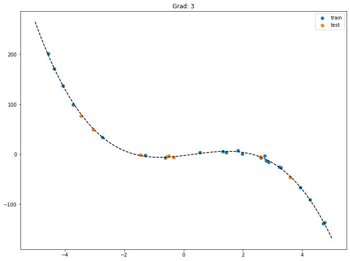
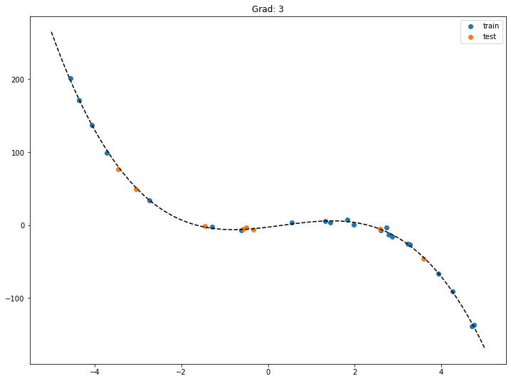
 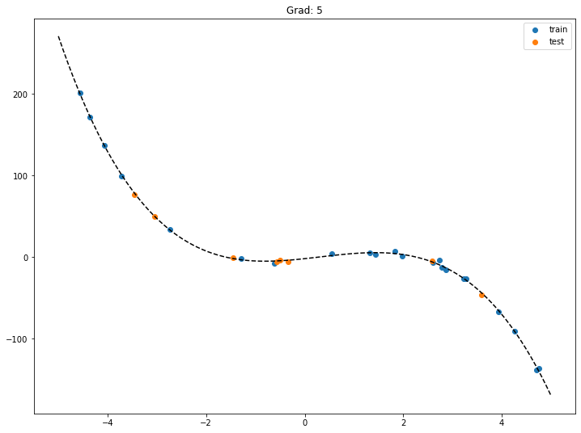
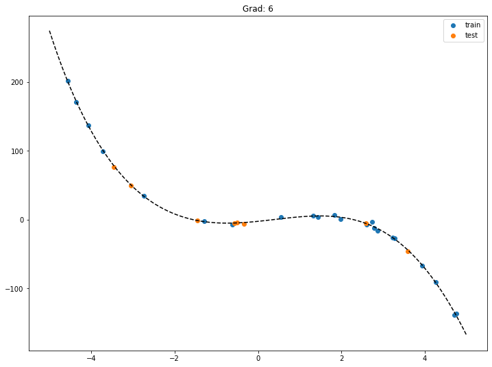
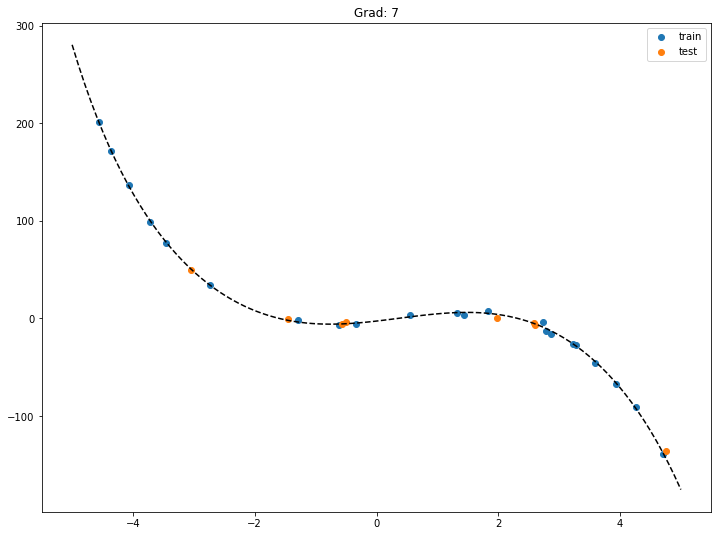
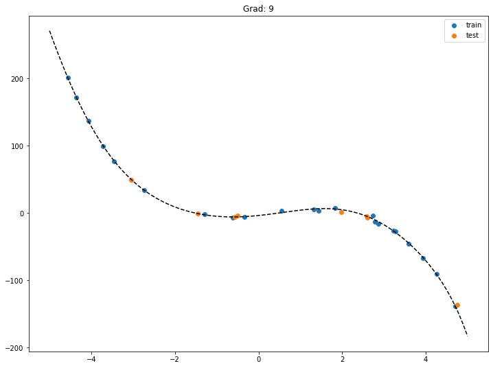
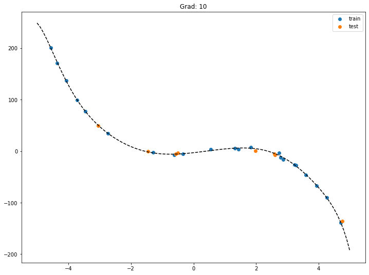
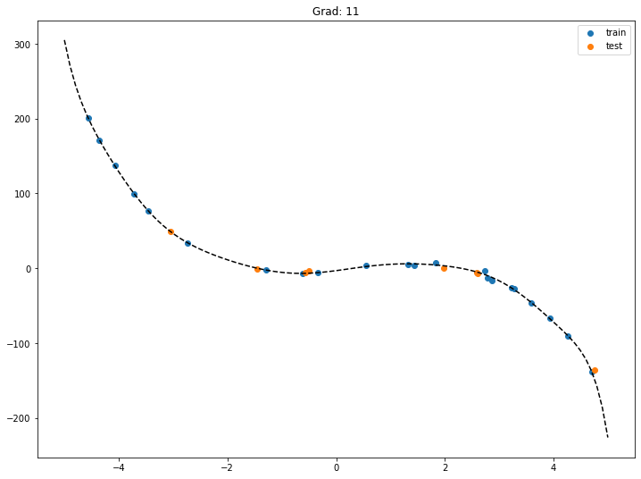
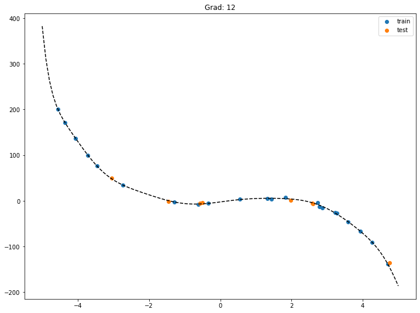
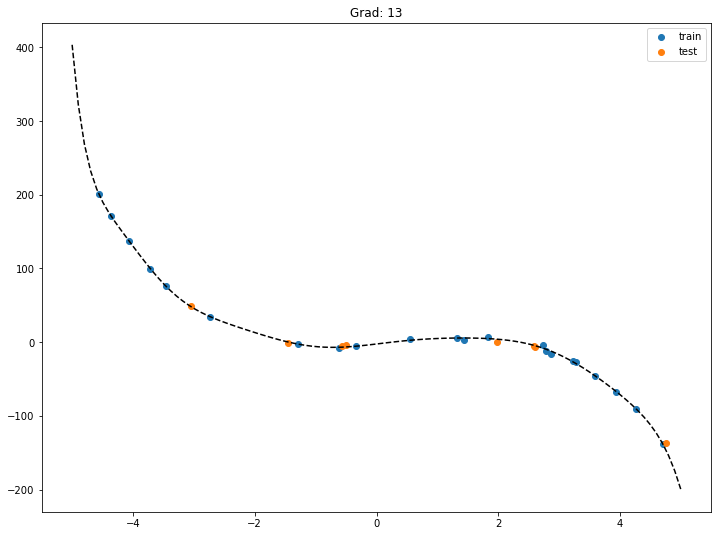
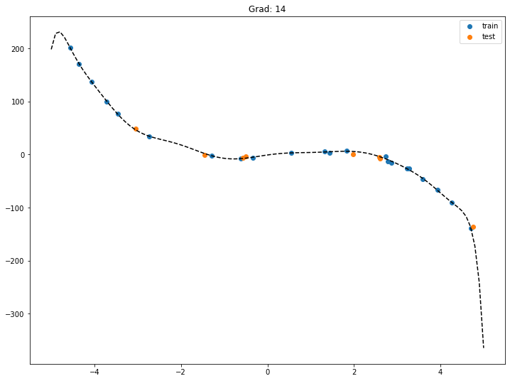
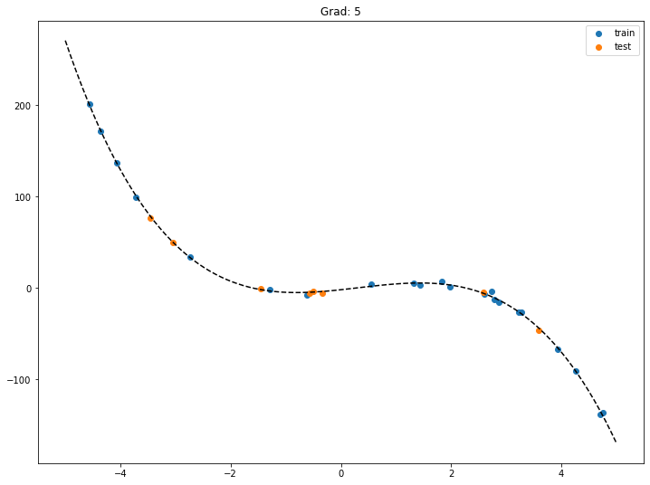
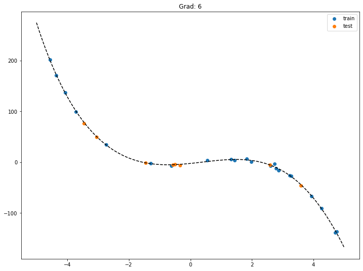
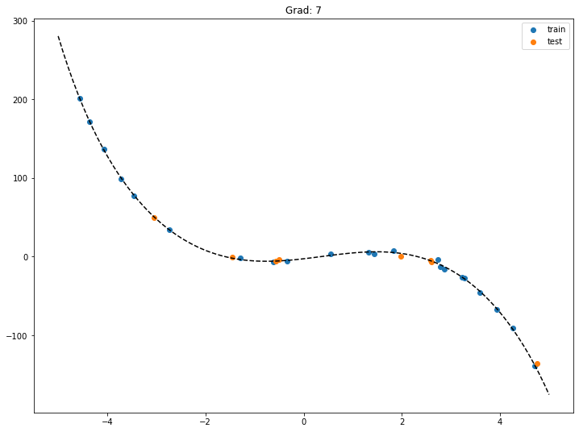
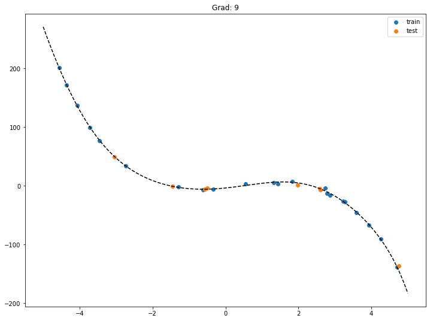
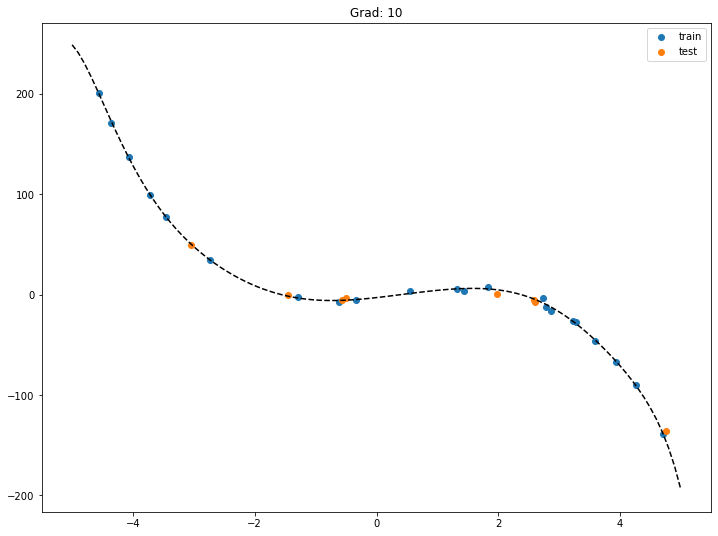
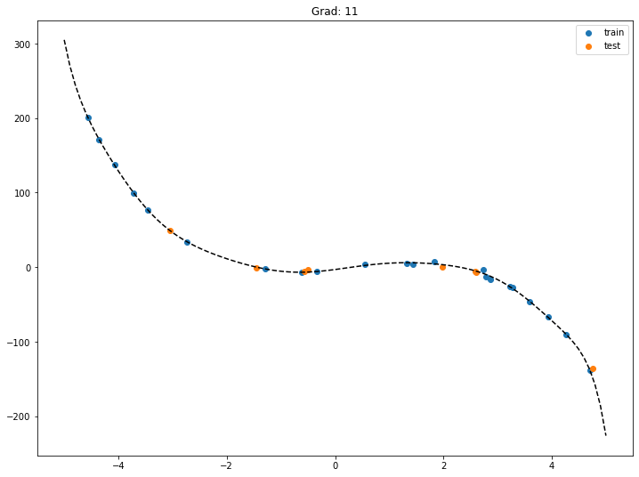
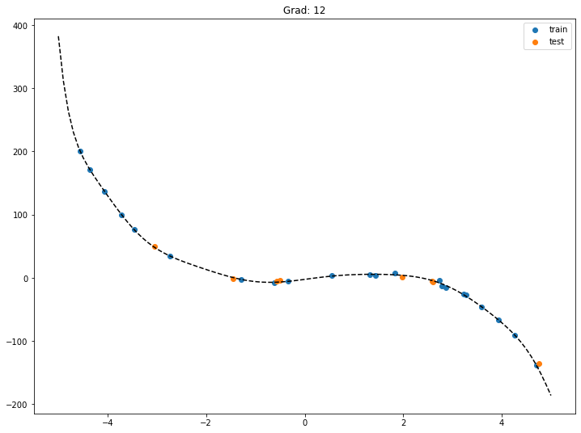
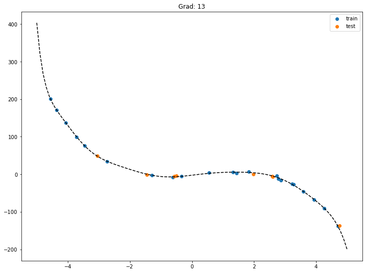
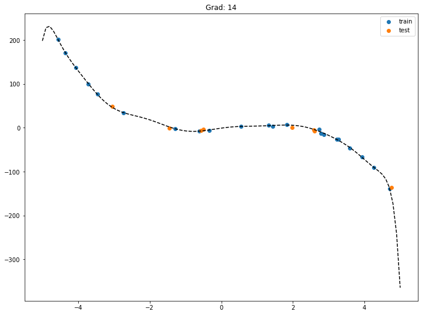
Am besten notieren wir die verschiedenen R2-Scores mit, um zu entscheiden, ob Underfitting oder Overfitting vorliegt.
# erzeuge künstliche Daten
X,y = erzeuge_kuenstliche_messdaten([-3, 7, 2, -2], 30)
# Split in Trainings- und Testdaten
X_train, X_test, y_train, y_test = train_test_split(X,y)
r2_train_liste = []
r2_test_liste = []
# FOR-Schleife
for grad in range(1,15):
# Auswahl des Modells
model = PolynomialRegression(degree = grad)
# Training
model.fit(X_train, y_train)
# Validierung
r2_train = r2_score(y_train, model.predict(X_train))
r2_test = r2_score(y_test, model.predict(X_test))
r2_train_liste.append(r2_train)
r2_test_liste.append(r2_test)
print(r2_train_liste)
print(r2_test_liste)
[0.7972509161240322, 0.8237277854930649, 0.9993953135862568, 0.9994846692650301, 0.9997305618462948, 0.9997381937742655, 0.9997455278310311, 0.9997621707744264, 0.9997623945870197, 0.9997755038038897, 0.999904518962109, 0.9999068278548401, 0.9999143648514689, 0.9999260429584113]
[0.32747201381317137, 0.1919951096693432, 0.9943102716644568, 0.9942666712379927, 0.9919686184236478, 0.9911911924874715, 0.9908178971012993, 0.9903505287488744, 0.9904185561357548, 0.9901168951145852, 0.9864742796629523, 0.9874910837268441, 0.9854006317051394, 0.9900972826231453]
Ein Plot der R2-Scores hilft bei der Einschätzung Over-/Underfitting:
fig, ax = plt.subplots()
ax.plot(range(1,15), r2_train_liste, label='train')
ax.plot(range(1,15), r2_test_liste, label='test')
[<matplotlib.lines.Line2D at 0x1468a6b50>]
Offensichtlich sind wir nach Grad 12 so schlecht, dass wir besser uns nur den Anfang angucken:
fig, ax = plt.subplots(figsize=(12,8))
ax.plot(range(1,12), r2_train_liste[0:11], label='train')
ax.plot(range(1,12), r2_test_liste[0:11], label='test')
ax.legend();
Zwischen Grad 3 und Grad 8 ist der R2-Score für die Trainingsdaten praktisch gleich dem R2-Score der Testdaten. Diese Modelle können also gewählt werden. Für Grad 1 und 2 ist der R2-Score sowohl für Trainings- als auch Testdaten schlecht, es liegt Underfitting vor. Ab Grad 9 ist der R2-Score für die Trainingsdaten super, aber er fällt für die Testdaten ab. Wir sind im Bereich des Overfittings.
Fazit: es kommen die polynomialen Regressionsmodelle für Grad 3 bis 8 infrage. Wenn man die Wahl hat, wählt man das einfachste Modell, also hier das mit Grad 3.